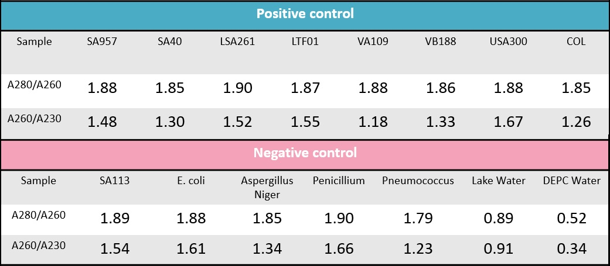
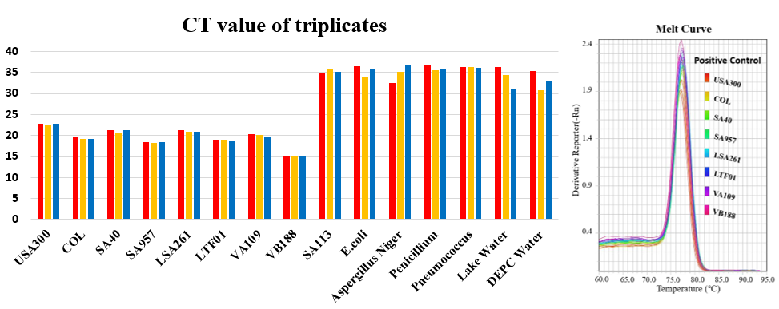
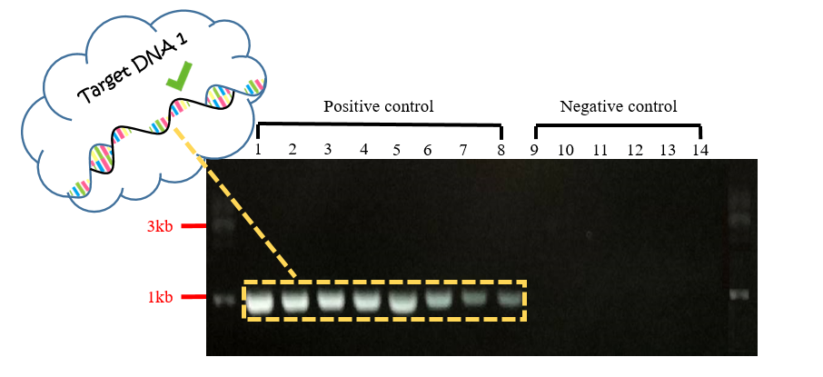
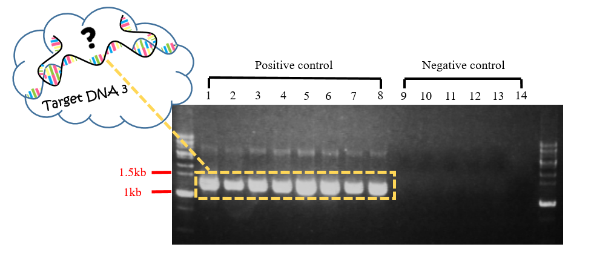
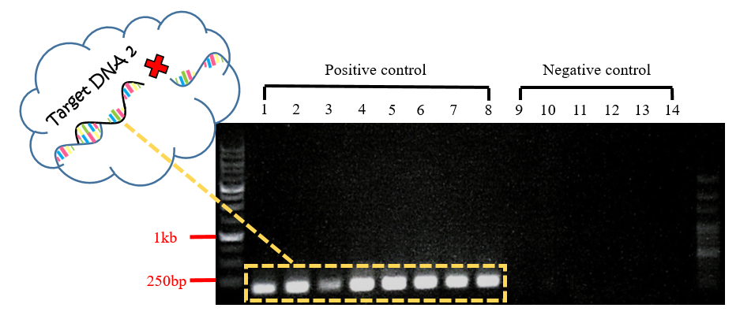
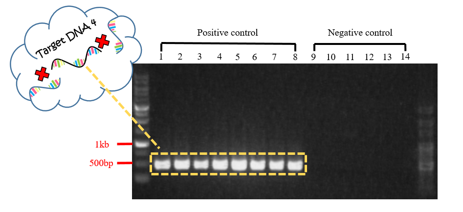
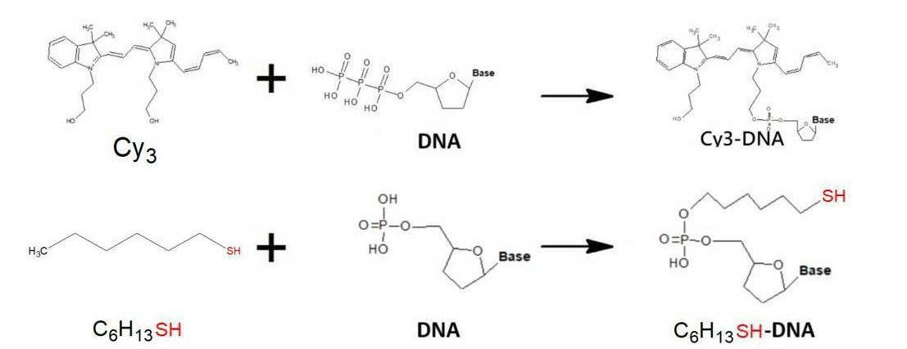
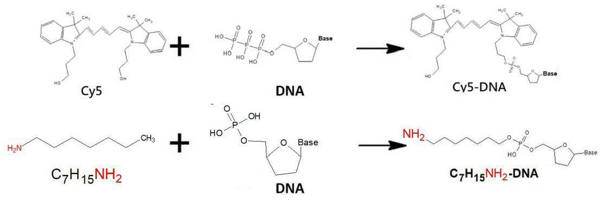

Molecular Biology
Introduction
MRSA

Methicillin-resistant Staphylococcus aureus (MRSA) is a major pathogen in hospitals and the community. It causes a wide range of infections affecting the superficial skin and soft tissue, as well invasive infections including pneumonia, bloodstream infections, bone and joint infections.
Specificity (30-mer vs 999-mer)
With a single electrode, DNA biosensor can detect a DNA fragment of only 16-30 mer, as limited by the length of probe. However, based on the properties that electrons can be transferred through the DNA, we use two electrodes which binding the same length of probe as single electrode. It can detect more than 1000 mer by analyzing the conductance. Besides, the target DNA needs to hybridize with two different probes to let electrons be transferred through the DNA.
Experiment
Preparation of the Target DNA
-
Genomic dna extraction

To ensure the quality of our DNA, we use nanodrop to make sure our genomic DNA is successfully extracted. Look at table B. The ratio of the absorbance at 260 and 280 nm (A260/280) is used to assess the purity of nucleic acids. For pure DNA, A260/280 is widely considered at 1.8. so in our table, almost sample we use is pure DNA. And A260/A230 also means the purity of nucleic acids but it is compare to like RNA or other substance. The best value should be 2, our DNA sample is located at 1.5-1.7. although they aren’t perfect but it is enough for our experiment.
-
Real-Time Polymerase Chain Reaction

To ensure mecA is the specific gene in MRSA, we used 8 positive controls and 6 negative controls to run the real-time PCR machine with our primer. The CT means how many cycles does the DNA concentration reach in the threshold that the machine can detect. When the value is smaller, the DNA concentration or quantity is higher. Look at the table, there is two part in the table – positive ( left part ) and negative ( right part ). The CT of positive is between 14 to 23 cycles and negative is between 30 to 37 cycles. This mean the sequence we want in the positive is correctly magnify.
Besides the CT in the table A, we also use melting curve to analyze our outcome by real-time PCR. Melting curve means the value that the temperature when half of the target DNA is annealed together. Look at the figure A, the curve position of positive control is different from negative control. And we use gel electrophoresis to prove the size of DNA is correct in positive control and incorrect in negative control. This experiment can prove our specific primer.
-
Polymerase Chain Reaction
PCR is the most important part of our molecular biology experiments, and it is very simple in principle, but it is indispensable. PCR is a tool to help verify the correctness of a sequence, whether it is for probe DNA or genomic DNA. In addition, it is conceptually related to our design philosophy. When PCR uses primer to test the sample sequence, it also symbolizes that our chips is double-checked from both ends in a more advanced way. Set up a bridge that belongs to DNA and set up a technology that connects the old and the new era.
*Number 1 to 8 are positive controls extracted from different strains of MRSA, the order is followed by SA40, SA957, LSA261, VA109, VB188, LTF01, USA300 and COL. Number 9 to 14 are negative controls and the order is followed by MSSA genomic DNA, Ecoli genomic DNA, Streptococcus pneumoniae genomic DNA, Rhizopus stolonifera genomic DNA, Penicillium genomic DNA, and water.

We extracted these DNA fragments, whether positive or negative control, by PCR. In the electropherogram, each band in positive control is observed to have the length of about 975bp, and there wasn't any band observed in negative control. DNA probes on chip FF is aimed to hybridize with the sequence, which is 975bp in length, contained in mecA gene. So, with this experiment, and the following gel extraction, we can proof the fact that the target DNA in length of 975bp can indeed hybridize with the DNA probes and then power on the current on chip FF. The result in negative control is to prove that mecA gene is specific in MRSA.

We extracted these DNA fragments, whether positive or negative control, by PCR. In the electropherogram, each band in positive control is observed to have the length of about 1277bp, and there wasn't any band observed in negative control. DNA probes on chip FF is aimed to hybridize with the sequence, which is 975bp in length, contained in mecA gene. So, with this experiment, and the following gel extraction, we can test whether the target DNA in length of 1277bp can hybridize with the DNA probes and then power on the current on chip FF. The result in negative control is to prove that mecA gene is specific in MRSA.

This experiment used PCR to search for a 175 bp DNA fragment. It is Included in the 975 bp fragments detected by the probe in the mecA gene. The purpose is to help proving that even if the sample and the probe on the chips can smoothly hybrid, the length is not long enough, the chips still can not be conducted. After purifyinf and denaturing the DNA fragments, they can be used as a negative control for subsequent chips testing experiments.Numbers 9-14 are the negative control of this experiment, which indicates that the mecA gene is not present in their genomic DNA.

Since the probes at both ends of the chips is aimed at a fragment of 975 bp in the 2007 bp of the mecA gene, the design of this experiment is to find a mecA gene fragment other than the 975 bp fragment by PCR. We hope to get the fact that the samples have mecA gene can not make chips conductive after being purifying and denaturing. This will take as one of the negative controls of the subsequent chips test experiments. The total length of this gene fragment is 480 bp. In addition, numbers 9-14 are the negative comtrol of this experiment, which indicates that the mecA gene is not present in their genomic DNA.
-
DNA Extraction
DNA Denaturation
When detection is processed on chip FF, the DNA in the sample will hybridize to the DNA probes on the electrode. Therefore, we must first denature the DNA in the sample from double-stranded to single-stranded, so that the complementary hybridization is available. The double-stranded DNA can be opened by heating the sample to 95 degrees for 10 minutes, and the sample contains ssDNA is immediately added into 2X SSC buffer and store in 4 degrees in order to keep it from renaturing.
Preparation of Capture probe
In order to improve the convenience and stability of the device in the overall design, we have made some modifications at the two terminals of the DNA bridge, that were, the DNA probes. First, after measuring the electric current after power-on and analyzing the conductivity, we hope to observe the occurrence of conduction more intuitively. Therefore, the 3' and 5' terminals of the probes are respectively connected with the fluorescent substances Cy3 and Cy5 to confirm the correctness of experiment result again. In addition, in order to make a more stable binding of the DNA probes to the electrodes, the gold electrode is modified with SH, and the graphene is modified with NH2 to enhance the binding between the probes and the electrodes.
strand 1: 5' HSC6-AAAATCGATGGTAAAGGTTGGCAAAAAGATAAA-Cy3 3'

strand 2: 5' Cy5-AACTACGGTAACATTGATCGCAACGTTCAATTT-AminoC7 3'

Discussion
In the experimental content, we determined the presence of mecA gene in various strains of MRSA by PCR results to reflect the credibility of the subsequent detection results and confirm the corresponding probe sequences. There are many reasons for choosing PCR. First, PCR is currently the most widely used method for gene detection. Almost all related literatures for detecting MRSA genes use PCR. In addition, the most important reason is that the chips we designed are designed to surpass existing technology. Therefore, PCR is naturally the technology we expect to surpass. PCR could be chosen for the best comparison. The results of qPCR corroborate the specificity of our designed primers for mecA gene, and the purpose is also that support the correctness of the test results. In the part of molecular biology experiments, all experimental designs and results use to demonstrate the validity of the materials we use on the chips. At present, mecA is the only target gene, and in the future, these technologies can be used to continue to develop more probe sequences capable of solving the drug resistance genes harmful to humans, and achieve the final detection purpose.
Conclusion
Different lengths of target DNA from MRSA are prepared by using polymerase chain reaction and DNA extraction. Furthermore, we using polymerase chain reaction to confirm that our DNA probe is specific to our target DNA. Therefore, we can assume that our DNA probe will work on the “FF”.